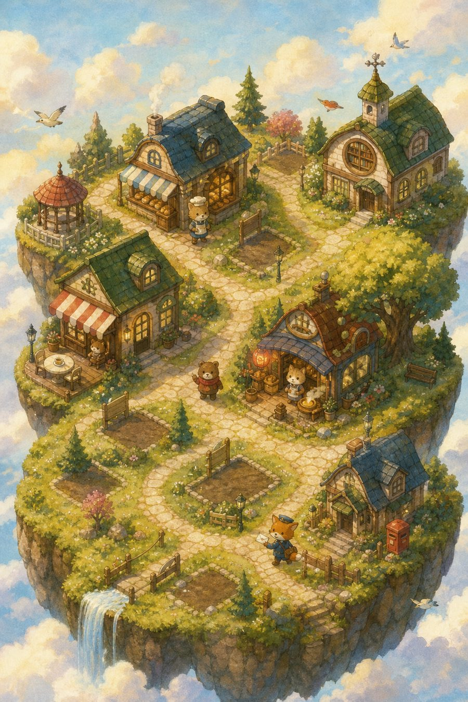
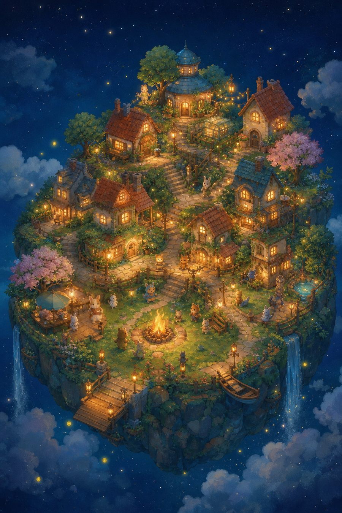

8:12●●●
配達員のポスト1週間前、お母さんと電話してたね。元気だった？
今日の質問
今日、いちばん長く
いた場所は？
いた場所は？
① ホーム（朝に開いた時）
町が画面いっぱいに広がり、空き地には「これから何か建つ」看板。住人があなたの過去の日記から話しかけてくる。下には今日の質問が1つだけ。
「書いたことが、町になって返ってくる」。1日10秒で書けて、書くたびに町が少し変わり、住人があなたの過去を覚えていて、月に一度あなたの言葉で新聞が届く。コツコツの楽しさを、毎日の手応えに変える設計です。ここを目標に、費用と手間を話し合って現実の線を決めます。
町が画面いっぱいに広がり、空き地には「これから何か建つ」看板。住人があなたの過去の日記から話しかけてくる。下には今日の質問が1つだけ。
白紙をなくす。質問にタップで答えるだけで1日分になり、ひとことは任意。質問は毎日変わり、答えがそのまま町の材料になる。
書いた言葉が町のものになる瞬間を見せる。よく書く言葉が店になり、看板に名前が出る。書いた直後に、必ず何かが変わる。
日記の本当の価値（見返す喜び）を、毎日の遊びに前倒しする。1週間前・1か月前・1年前の自分が、住人の言葉で届く。
7日続けて書いた夜にだけ、灯りを頼りにやってくる。ひとつだけ品物を置いていく。
書くと、たまに何が起きるか分からない。続けた日数や書いた内容で、現れる訪問者が変わる。集めたくなる図鑑つき。
あなたの言葉だけで作られた1か月のまとめが届く。コツコツの積み重ねを、読み物として受け取れる。1年たつと町の成長を早送りで見られる。


| 要素 | 理想図の水準 | 現実的な案 | 私が作れるか |
|---|---|---|---|
| 絵（町・住人） | 専門のイラストレーターによる統一された部品一式 | 画像生成で部品を1つずつ作り、画風をそろえる工夫をする | △ そろうかは試作しないと分からない |
| 動き（灯る・建つ・訪れる） | なめらかなアニメーション | 画面側の動きで表現（光・拡大・出現） | ○ |
| 10秒で書く | 質問カード＋タップ | 同じ | ○ |
| あなたの言葉が町になる | よく書く言葉が店名・看板になる | 言葉の回数を数えて、決まった部品に名前を付ける | ○ |
| 住人があなたの過去を話す | 自然な会話 | 型にはめた文（AIを使わず費用0）。より自然にするならAIで文を作る（費用がかかる） | ○（型の文） |
| 町の新聞 | 読み物として面白い記事 | 集計＋型の文。AIで書く場合は1人1か月あたり少額の見込み（要試算） | ○（型の文） |
| 毎日の通知 | 決まった時間に住人から通知 | ホーム画面に追加したWebアプリの通知（サーバーが必要。Cloudflareは用意済み） | △ iPhone実機での確認が必要 |
| 記録の保存・機種変更 | 自動で同期され、消えない | 今は控えの手動保存。自動同期にはログインの仕組みが必要 | △ 手間と個人情報の扱いが増える |
| 配布の形 | App Storeのアプリ | ホーム画面に追加するWebアプリ（費用0）。アプリにするならApple Developer登録（年99ドル）と審査 | ○（Webアプリ） |
※費用の数字のうち、Apple Developer登録の年99ドル以外は、まだ試算していません。決める段階で、実際に小さく試して確かめます。